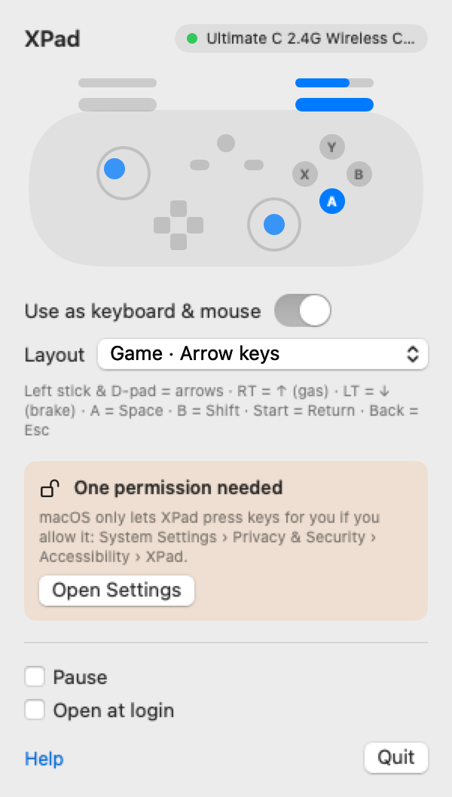

Xbox 360 tipi kumandan, artık Mac'te çalışıyor.
XPad, macOS'un tanımadığı kumandalar için ücretsiz bir menü çubuğu uygulaması: Xbox 360 kumandaları ve 8BitDo Ultimate C 2.4G gibi XInput alıcıları. Tak ve oyna. Sürücü yok, çekirdek eklentisi yok, güvenlik ayarı değiştirmek yok.
XPad'i indir- Ücretsiz ve açık kaynak
- macOS 13+
- Apple Silicon ve Intel
- 1 MB'tan küçük
- Uygulama İngilizce

Üç adım
Kur
DMG'yi aç, XPad'i Uygulamalar klasörüne sürükle.
Bir kez aç
macOS, Apple'a ücretli imzalatılmamış ücretsiz uygulamaları doğrulayamaz. Sistem Ayarları › Gizlilik ve Güvenlik'e gir, Yine de Aç'a tıkla. Sadece ilk seferde.
Tak ve oyna
Kumandayı ya da alıcısını tak. Use as keyboard & mouse anahtarını aç, Erişilebilirlik'ten XPad'e izin ver.
Kumandan neden tanınmıyor?
Mac'ler standart HID kumandaları ve Xbox One/Series, PlayStation ve MFi kumandaları destekler. Xbox 360 kumandaları ve "X-input" modundaki birçok üçüncü parti kumanda ise XInput adlı farklı bir USB protokolü kullanır. macOS'ta bunun sürücüsü yok: kumanda Sistem Bilgisi'nde görünür ama oyunlar, Chrome, Safari ve Steam onu görmez. Eski çözüm olan 360Controller çekirdek eklentisi artık geliştirilmiyor ve M çipli Mac'lerde güvenliği düşürmeyi gerektiriyor.
XPad kumandayı Apple'ın IOUSBHost çerçevesiyle doğrudan okur ve her uygulamanın anladığı klavye ve fare girişini gönderir.
Hazır düzenler
| Düzen | Çubuklar | Tuşlar |
|---|---|---|
| Oyun · Ok tuşları | Sol çubuk ve yön tuşları = oklar | RT = ↑ gaz, LT = ↓ fren, A = Boşluk, B = Shift, Start = Enter, Back = Esc |
| Oyun · WASD + fare | Sol = WASD, sağ = fare | RT = sol tık, LT = sağ tık, A = Boşluk, Start = Esc, Back = Tab |
| Masaüstü · Fare | Sol = fare, sağ = kaydırma | A = tık, B = sağ tık, LB/RB = geri/ileri |
Sorular
Hangi kumandalar çalışır?
Xbox 360 (XInput) protokolünü kullanan USB kumandalar ve alıcılar: kablolu Xbox 360 kumandaları ve X-input modundaki üçüncü parti kumandalar. 8BitDo Ultimate C 2.4G ile test edildi. Xbox One/Series, PlayStation ve Switch Pro kumandaları macOS'ta zaten XPad'siz çalışıyor.
M çipli Mac'te çalışır mı?
Evet. M1, M2, M3, M4 ve Intel Mac'lerde, macOS 13 Ventura ve sonrasında çalışır.
SIP'i kapatmam ya da sürücü kurmam gerekir mi?
Hayır. Sisteme hiçbir şey kurulmaz. XPad'den çıkınca Mac'in eskisi gibi kalır.
Neden Erişilebilirlik izni istiyor?
macOS, bir uygulamanın senin yerine tuşa basmasına ve imleci oynatmasına ancak bu izinle olanak tanıyor. XPad bu izni başka bir şey için kullanmaz; internete bağlanmaz, veri toplamaz.
Steam onu gamepad olarak görür mü?
Şimdilik hayır. XPad klavye ve fare girişi gönderir, oyunlar klavye görür. Gerçek sanal gamepad için Apple'dan özel izin gerekiyor.
"Kumanda başka bir uygulama tarafından kullanılıyor" diyor.
Bir USB kumandayı aynı anda tek bir uygulama kullanabilir. Diğer uygulamayı ya da tarayıcı sekmesini kapat, XPad kendiliğinden bağlanır. Kumandayı başka bir uygulamaya bırakmak için Pause'a bas.
Gerçekten ücretsiz mi?
Evet. Ücretsiz ve açık kaynak (MIT). Reklam yok, hesap yok, uygulama içi satın alma yok.